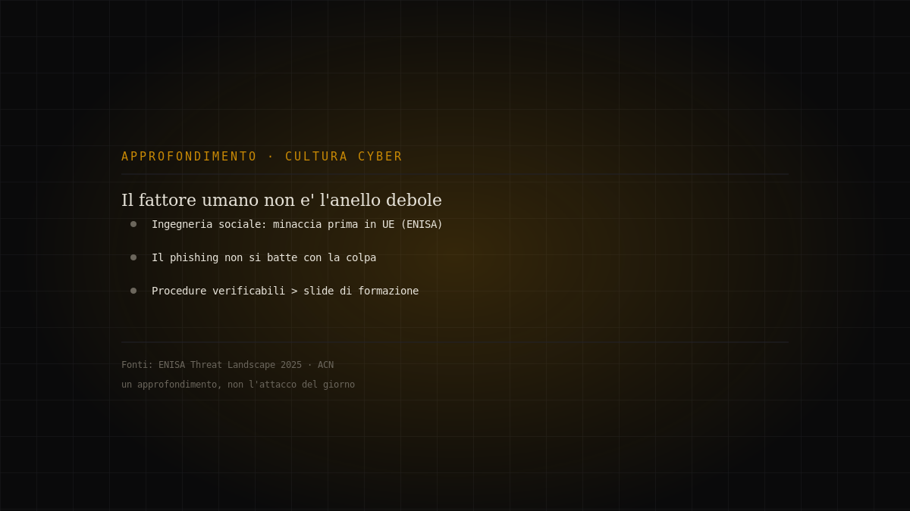
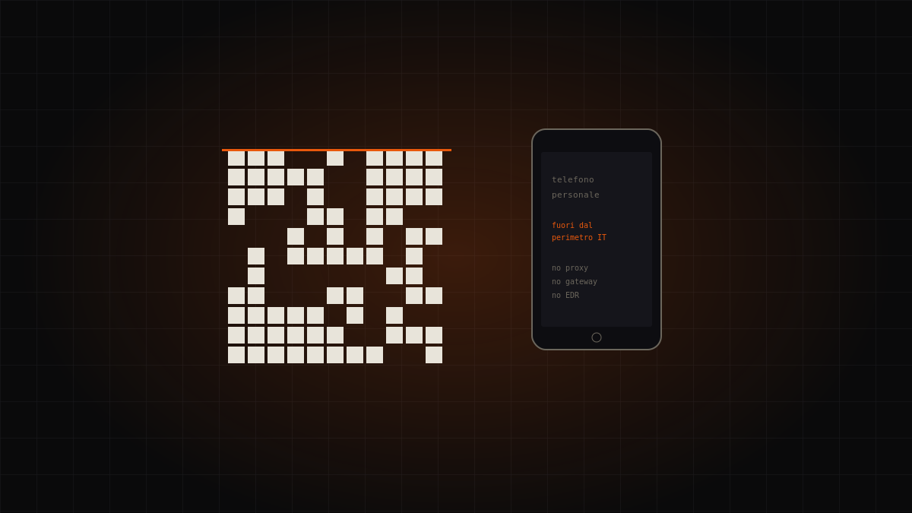

Tema · Persone
Cultura cyber
La tecnologia da sola non basta: la sicurezza è anche un fatto di persone e abitudini.

Dossier in questa sezione
2 dossierIl fattore umano non è l'anello debole: perché la colpa non ferma il phishing
L'ingegneria sociale è tra le minacce prime nell'Unione secondo l'ENISA, eppure la reazione più comune resta la peggiore: dare la colpa…
Approfondimento editoriale · fonti ufficiali · medium
Continua a leggere →
Il QR code che ruba la sessione, non la password
Kimsuky ha smesso di combattere i filtri email aziendali. Ha semplicemente cambiato canale: un QR code costringe la vittima a passare al telefono pers…
Kimsuky · high
Continua a leggere →Il tema in breve
L'anello umano non è il più debole per caso
L'ingegneria sociale resta fra le minacce prime perché aggira i controlli tecnici puntando alle persone. Ma “l'utente è il problema” è una scorciatoia sbagliata: le persone sbagliano quando i processi le mettono nelle condizioni di sbagliare. La cultura cyber non è colpevolizzare, è dare strumenti e abitudini che rendono la scelta sicura anche quella facile.
Cyber igiene, in concreto
Poche pratiche, ripetute: password lunghe e uniche gestite da un password manager, autenticazione a più fattori, diffidenza verso link e allegati inattesi, aggiornamenti installati. L'ENISA e la campagna Secure Our World della CISA promuovono proprio questi comportamenti di base, e ogni ottobre il Mese europeo della cybersicurezza li rilancia.
Formazione che cambia i comportamenti
La consapevolezza utile non è un corso annuale dimenticato il giorno dopo: è pratica ricorrente, simulazioni di phishing fatte per insegnare (non per punire), messaggi chiari e brevi. Un'organizzazione che parla di sicurezza in modo comprensibile ottiene più protezione di una che compra l'ennesimo strumento.
Domande frequenti
- Cos'è la cyber igiene?
- L'insieme di abitudini di base — password robuste, MFA, aggiornamenti, prudenza sui link — che riducono drasticamente il rischio quotidiano.
- La formazione serve davvero?
- Sì, se è ricorrente e pratica. Le simulazioni di phishing pensate per insegnare, non per punire, cambiano i comportamenti nel tempo.